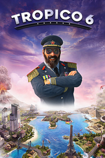

Tropico 6
Detalles
|  | |
| Tiempo de juego | No Jugado |
| Última actividad | Nunca |
| Añadido | 11/5/2024 22:37:13 |
| Modificado | 11/6/2024 22:30:18 |
| Estado de finalización | No Jugado |
| Librería | Playnite |
| Fuente | 4TB TANK |
| Plataforma | PC (Windows) |
| Fecha de lanzamiento | 3/29/2019 |
| Puntuación de la Comunidad | 86 |
| Puntuación de la Crítica | 78 |
| Puntuación de usuario | |
| Género | Estrategia Simuladores |
| Desarrollador | Limbic Entertainment Realmforge Studios |
| Editor | Kalypso Media |
| Característica | Cloud Saves Compat. Total Con Mando Cooperativo Cooperativo En Línea Cromos De Jcj Jcj En Línea Logros De Multijugador Préstamo Familiar Remote Play En TV Un Jugador Workshop |
| Enlaces | Punto de encuentro Discusiones Guías Noticias Página de la tienda PCGamingWiki Logros Workshop |
| Tag | Ambientales Buena trama Construcción Construcción de ciudades Cooperativos De arriba a abajo Destrucción Diplomacia Divertidos Economía Estrategia Gestión Las elecciones importan Multijugador Política Políticos Sandbox Simulación Simulador de política Un jugador |
Descripción
¡El Presidente ha vuelto!
En tiempos de agitación política y malestar social, los ciudadanos necesitan líderes visionarios que dirijan el destino de su país con diligencia e ingenio. Demuestra una vez más tu valía como temible dictador u hombre de estado pacifista en la isla de Tropico y erige el futuro de tu nación durante cuatro eras emblemáticas. Enfréntate a nuevos retos a nivel internacional y ten siempre en cuenta las necesidades de tu pueblo.
Por primera vez en esta saga, podrás gobernar grandes archipiélagos, construir puentes para conectar tus islas y utilizar nuevos medios de transporte e infraestructuras. Envía hordas de tropicanos a robar las maravillas del mundo, la Estatua de la Libertad y la Torre Eiffel incluidas. Decora tu palacio a tu gusto y pronuncia discursos electorales desde el balcón para ganarte el apoyo de tus súbditos.

 Por primera vez en esta saga, podrás jugar en enormes archipiélagos. Gobierna varias islas a la vez y enfréntate a los nuevos retos.
Por primera vez en esta saga, podrás jugar en enormes archipiélagos. Gobierna varias islas a la vez y enfréntate a los nuevos retos.

Envía a tus agentes a tierras extranjeras para robar las maravillas del mundo y otros monumentos para tu colección.

Levanta puentes, construye túneles y transporta a tus ciudadanos y turistas en taxis, autobuses y teleféricos. Tropico 6 ofrece medios de transporte e infraestructuras completamente nuevas.

Personaliza tu palacio y escoge entre todos los extras disponibles.

Tropico 6 incluye un sistema de investigación revisado que se centra en los aspectos políticos de ser el mayor dictador del mundo.
¡Vuelven los discursos electorales! Dirígete a los ciudadanos y haz promesas que no podrás cumplir.

Tropico 6 presenta multijugador para hasta 4 jugadores.
En tiempos de agitación política y malestar social, los ciudadanos necesitan líderes visionarios que dirijan el destino de su país con diligencia e ingenio. Demuestra una vez más tu valía como temible dictador u hombre de estado pacifista en la isla de Tropico y erige el futuro de tu nación durante cuatro eras emblemáticas. Enfréntate a nuevos retos a nivel internacional y ten siempre en cuenta las necesidades de tu pueblo.
Por primera vez en esta saga, podrás gobernar grandes archipiélagos, construir puentes para conectar tus islas y utilizar nuevos medios de transporte e infraestructuras. Envía hordas de tropicanos a robar las maravillas del mundo, la Estatua de la Libertad y la Torre Eiffel incluidas. Decora tu palacio a tu gusto y pronuncia discursos electorales desde el balcón para ganarte el apoyo de tus súbditos.
Por primera vez en esta saga, podrás jugar en enormes archipiélagos. Gobierna varias islas a la vez y enfréntate a los nuevos retos. Envía a tus agentes a tierras extranjeras para robar las maravillas del mundo y otros monumentos para tu colección. Levanta puentes, construye túneles y transporta a tus ciudadanos y turistas en taxis, autobuses y teleféricos. Tropico 6 ofrece medios de transporte e infraestructuras completamente nuevas. Personaliza tu palacio y escoge entre todos los extras disponibles. Tropico 6 incluye un sistema de investigación revisado que se centra en los aspectos políticos de ser el mayor dictador del mundo. ¡Vuelven los discursos electorales! Dirígete a los ciudadanos y haz promesas que no podrás cumplir. Tropico 6 presenta multijugador para hasta 4 jugadores.